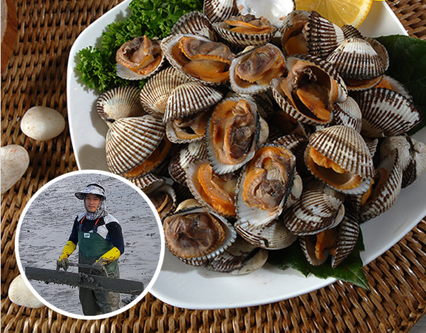

- 꼬막소개
- 판매품목
- 주문 및 배송안내
꼬막소개
꼬막은 돌조개과에 속하는 조개로, 서해안과 남해안에 많이 분포되어 있습니다.
11월부터 3월까지가 제철시기로써 추운 겨울에 맛 볼 수 있는 겨울철 별미음식이기도 합니다.
담백하고 쫄깃쫄깃한 맛이 특징인 꼬막은 회나 무침 등으로 먹기도 하고 다양한 요리의 식재료로 이용되는데요.
특히 끓는 물에 살짝 데쳐서 초고주장과 함게 먹는 꼬막회가 가장 별미라고 할 수 있겠습니다.
또한 꼬막에는 다양한 비타민과 양질의 단백질 그리고 필수아미노산 성분이 고루 함유하고 있어 우리 몸을 건강하게 하는 다양한 효능들이 많다고 합니다.
그러면 지금부터 꼬막에는 어떤 효능들이 있는지 알아볼도록 하겠습니다.
- 성장발육
꼬막에는 양질의 단백질 및 비타민, 그리고 필수아미노산 성분이 풍부하게 들어있어서 성장기 어린이의 성장발육에 많은 도움을 준다고 합니다.
또한 꼬막에는 뼈를 튼튼하게 하는 칼슘 성분 역시 들어있기 때문에 성장발육 및 골격형성에도 큰 효능이 있다고 합니다.
- 간기능 개선
꼬막에 함유된 타우린 및 베타인 성분이 간의 독성물질을 외부로 배출시켜주는데 뛰어난 효능을 지니고 있기 때문에 간건강 및 간기능 향상에 탁월한 효과가 있다고 합니다.
그리고 이 두 성분은 간의 피로를 풀어주는데도 뛰어난 작용을 하여 과음으로 인해 손상된 간을 빠르게 회복시켜주고 알코올의 분해를 도와주어 숙취를 해소하는데 큰 도움이 된다고 합니다
- 지방간 개선
다량 들어있는 베타인 성분은 간기능 향상 뿐만 아니라 간에 지방이 쌓이는 지방간을 예방하는데도 큰 효과가 있다고 합니다.
- 혈관건강
꼬막에 함유된 타우린 성분이 혈전의 생성을 억제함과 동시에 혈중 콜레스테롤 수치를 낮춰주는 작용을 통해서 혈액순환에 뛰어난 효과가 있다고 합니다.
이렇게 혈관건강이 증진됨에 따라 혈관질환들인 고혈압, 동맥경화 등을 예방하는데도 효과적인 도움을 준다고 합니다.
- 면역력 강화
꼬막에는 면역력 증진에 뛰어난 성분인 핵산이 다량 함유되어 있어서 외부로부터의 바이러스 세균 등에 저항할 수 있는 면역력을 강화하는데 큰 도움을 준다고 합니다.
추운 온도로 면역력이 떨어지기 쉬운 겨울철에 꼬막을 드시면 면역력 강화에 좋다고 합니다.
- 빈혈예방
꼬막에는 빈혈에 좋은 효능을 지닌 철분이 다량으로 들어 있어서 빈혈을 예방하고 증상을 개선하는데 좋다고 합니다.
특히 철분이 부족하기 쉬운 임산부들의 건강관리에 많은 도움을 준다고 합니다.
- 피로회복
꼬막에 함유된 타우린 및 비타민B 성분들이 피로해진 몸의 에너지 생성을 돕고, 신진대사를 촉진함에 따라 피로를 풀어주고 떨어진 기력을 보충하는데 도움을 준다고 합니다.
- 다이어트
꼬막은 단백질이 풍부하고, 상대적으로 칼로리가 낮은 편이어서 다이어트 및 체중을 감량을 하는데 많은 도움을 준다고 합니다.
또한 풍부한 필수아미노산 및 미네랄 성분 역시 골고루 함유되어 있어서 균형잡힌 영양공급으로 건강하게 다이어트를 할 수 있도록 도와준다고 합니다.
